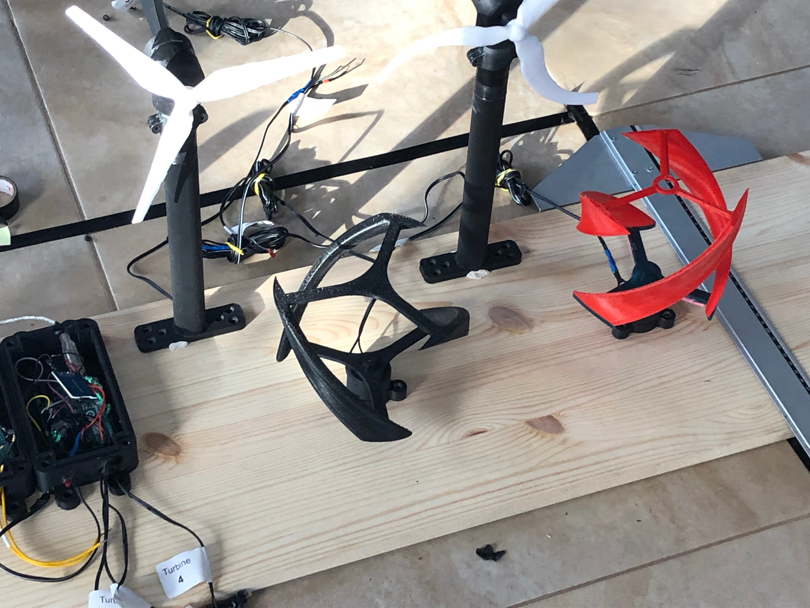
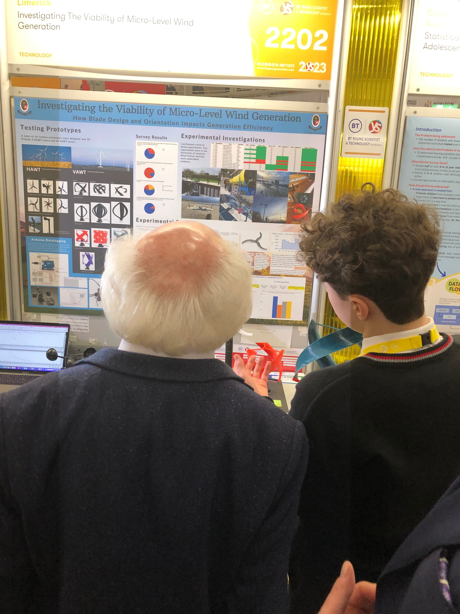
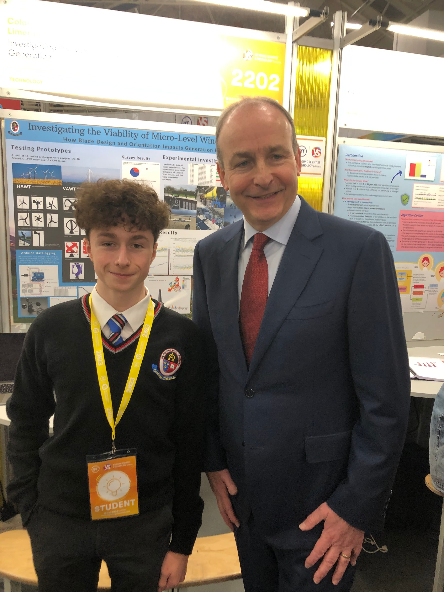
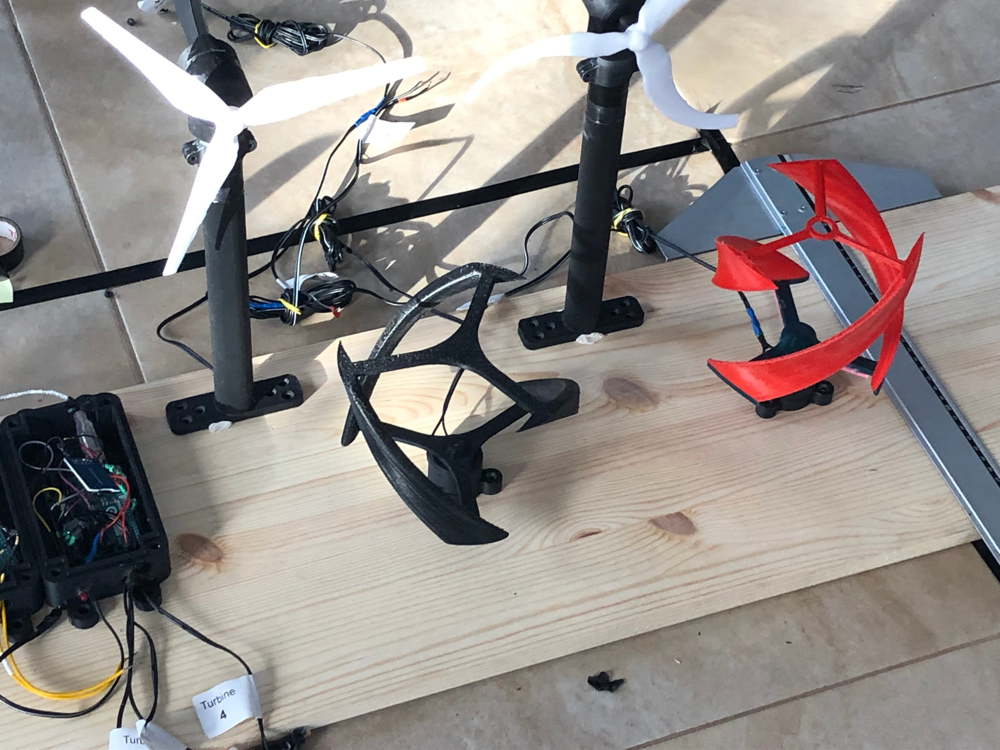
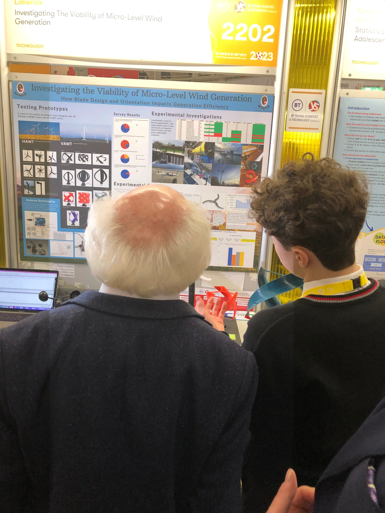
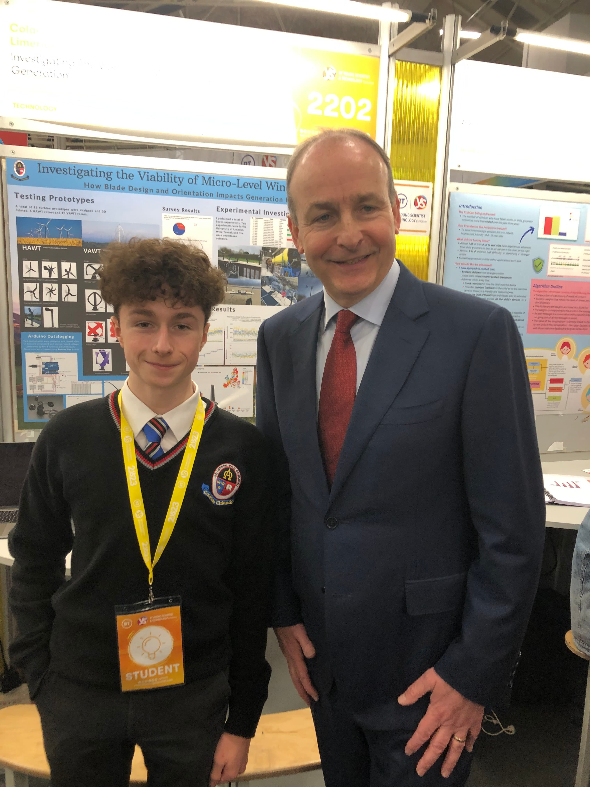
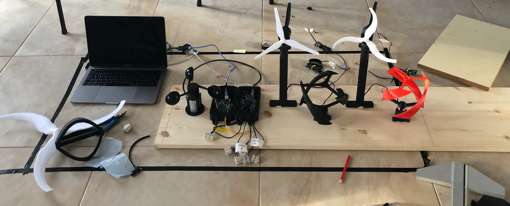
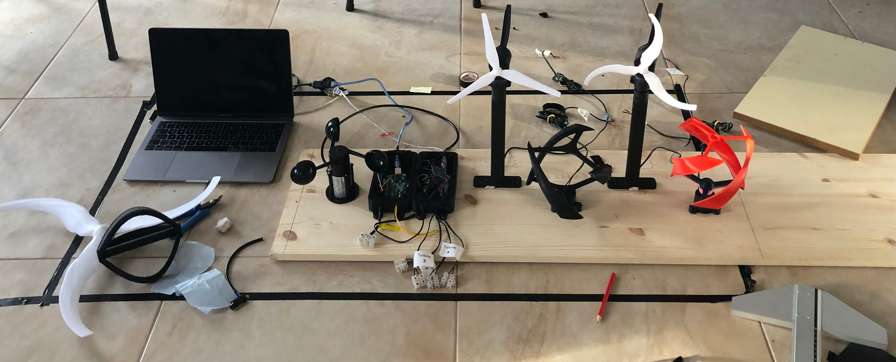

Wind
- Turbine Research: HAWT vs VAWT Performance Analysis
Research Overview
Ireland has excellent wind resources with a capacity factor of 28.3%. During the 2023 energy crisis, I explored micro-wind generation by testing 16 turbine rotors (10 Vertical Axis: VAWT, 6 Horizontal Axis: HAWT) in wind tunnel and outdoor conditions. HAWTs outperformed VAWTs by 660% on average. HAWTs generated 34% more in laminar conditions; VAWTs 80% more in turbulent. VAWTs needed powered-start at lower laminar speeds. Scaling by 1.5x decreased HAWT performance by 27.1%, VAWT by 47.8%. The scimitar blade HAWT showed 19% average improvement (11% in turbulent, 27.3% in laminar flow). On a 500W turbine, this rotor could increase annual generation by 217kWh to 1355kWh, saving €586 yearly. With 2023's 124% electricity price surge halving payback times, this research presents a compelling case for micro-wind adoption in Ireland, where no grants currently exist for micro-wind generation.Technical Development
I designed and 3D printed 16 turbine rotors across 6 categories: Straight/Scimitar Bladed HAWTs, plus Helicoid/Darrieus/Helical/Symmetrical Airfoil VAWTs. Each category (except Symmetrical Airfoil) had 3 variations: base, double blades, and 1.5x scaled. All designs used NREL-recommended airfoils for 1-3m rotor diameter turbines: S835 (root/tip) and S833 (primary) for HAWTs; S833 for VAWTs. I created 4 motor housings with HAWT assemblies featuring rear wind vanes and internal steel ball bearings. I built 2 Arduino Data Capture Boards: one for 4 turbines' voltage outputs and anemometer wind speed, another for a 24V 500W domestic turbine. Each used voltage divider circuits, mapping to real voltage and calibrated with GeoGebra.Testing Methodology
I conducted 7 comprehensive tests: 5 outdoors (1-10 m/s wind speeds) and 2 in the University of Limerick wind tunnel (1-7 m/s). HAWTs showed higher RPM with lower torque, while VAWTs exhibited opposite characteristics. VAWTs maintained rotation longer when airflow stopped, highlighting their stability in fluctuating speeds but requiring gearboxes to match HAWT output. The findings corroborated HAWT superiority in varied conditions and VAWT stability in fluctuating speeds. I used a 26% capacity factor to calculate energy increases and cost savings, comparing findings with existing VAWT vs HAWT research.Market Research & Impact
I surveyed 170 adults on micro-wind generation perceptions and interest in government incentives, considering Ireland's excellent wind resources. The survey revealed clear public interest in micro-wind adoption. Following this, I contacted 20 Irish renewable companies and secured a 500W turbine sponsorship, which I tested for 15 hours. The research demonstrated that micro-wind could provide significant cost savings for Irish households, especially given the 2023 electricity price surge. Despite Ireland's ideal wind conditions and public interest, the lack of government grants for micro-wind represents a missed opportunity this research aims to address.Key Learnings
Flexibility in research proved crucial. I initially planned to test rotors large enough to drive the 500W turbine directly, but soon realized this was unfeasible to 3D print. Pivoting to miniature models enabled wind tunnel testing at UL and simultaneous outdoor tests. Fortunately, our micro-scale results still corroborated existing research while highlighting potential scimitar blade designs. I discovered these observations held true even at diameter ≤30cm rotors, validating the scalability of the findings. This experience taught me the importance of adapting methodology while maintaining research rigor.Publication Journey & Research Philosophy
I discovered the difference between research and technical reports when submitting to Springer Nature's Journal of Sustainable Energy Research. While they found my approach, results and 190-page report "interesting," they noted it needed major revisions. At the time, I didn't know what a research report looked like—I've had to learn what that looks like since. I chose not to refactor it as I was already deep into my next project in authorship verification. This was ultimately a personal exploration. Through this journey, I've realized I enjoy exploring fresh problems and have a strong preference for projects where I also learn something new. In short, I want to keep exploring.Conclusion
I presented this research at the BT Young Scientist and Technologist exhibition 2023, and I was fortunate enough to place third in my category, individual-intermediate-technology, and be awarded the GreenCoat Renewables special award.
Links and Resources
.jpg)
.jpg)
.jpg)
.jpg)
 





.jpg)
.jpg)


.jpg)
.jpg)

 
